Qu’est-ce qu’un trouble de santé mentale ?
Psychiatre et chercheur · CHUM
La vignette
Femme, 34 ans
- Fatigue × 6 semaines
- Concentration ↓
- Insomnie terminale
- Anhédonie
- Rumination constante
Contexte : rupture amoureuse + conflit au travail
« Vous la voyez à l’urgence. Est-ce qu’elle a un trouble mental — oui ou non ? Et surtout : comment le savez-vous ? »
La définition du DSM-5
Trois mots qui portent toute la définition :
« cliniquement significative » « dysfonctionnement » « réponse attendue »
Wakefield : la « dysfonction préjudiciable »
HARMFUL
composante de valeur
Ce dysfonctionnement cause un préjudice selon les normes socioculturelles.
Seul ≠ trouble
Ex : deuil intense, manque de talent, conflit conjugal
DYSFUNCTION
composante factuelle
Un mécanisme mental interne échoue à accomplir la fonction naturelle pour laquelle il a été conçu par l’évolution.
Seul ≠ trouble
Ex : position inversée du cœur, angiome bénin
HARM + DYSFUNCTION = TROUBLE MENTAL
Spitzer : « a considerable advance over the DSM definition » Frances : « the best possible abstract definition of mental disorder »
Wakefield 1992, American Psychologist · Aftab & Csernansky 2020
Spitzer : « a considerable advance over the DSM definition » Frances : « the best possible abstract definition of mental disorder »
Wakefield 1992, American Psychologist · Aftab & Csernansky 2020
Quand le DSM se trompe : les faux positifs
Deuil
Tristesse profonde + insomnie + anhédonie + concentration ↓ après le décès d’un conjoint
- remplit les critères MDD, mais c’est la réponse NORMALE à une perte
Trouble des conduites
Adolescente qui ment, sèche l’école, fugue
- remplit les critères… mais elle fuit un beau-père abusif
Phobie sociale
Anxiété intense devant parler en public à des inconnus
- dysfonctionnement, ou signal de danger normal et adaptatif ?
Anxiété intense devant parler en public à des inconnus
« There are many normal conditions, from sleep and fatigue to grief and terror, that not only impair routine role functioning but are biologically designed to do so. »
— Wakefield 2007, World Psychiatry
Le problème : on n’a ni l’un ni l’autre
HARMFUL
culturellement contingent
Ce qui constitue un « préjudice » change selon l’époque et la culture.
Drapétomanie (1851) : la fuite des esclaves comme « trouble mental »
DYSFUNCTION
inapplicable
Exige de connaître la fonction évolutive des mécanismes mentaux. Pour la plupart des troubles : on ne sait pas.
Bolton (2008) : « a hypothesis that would typically be, for most psychiatric conditions, uncertain, speculative, and provisional. »
Retour à la patiente : « Vous avez maintenant la meilleure définition théorique (Wakefield) et la définition officielle (DSM). Aucune des deux ne vous permet de trancher avec certitude. »
Retour à la patiente : « Vous avez maintenant la meilleure définition théorique (Wakefield) et la définition officielle (DSM). Aucune des deux ne vous permet de trancher avec certitude. »
On ne peut pas définir « trouble » — alors qu’utilise-t-on ?
« La science par le passé n’a pas été assez mature pour fournir des diagnostics parfaitement valides. »
— DSM-5, Section I
FIABILITÉ
Les cliniciens s’entendent-ils sur le diagnostic ?
MDD κ = 0.28 · TAG κ = 0.20 Schizophrénie κ = 0.46
Regier et al. 2013, DSM-5 field trials
VALIDITÉ
Le diagnostic correspond-il à une réalité biologique ?
Le DSM le dit lui-même : non démontré.
Même la fiabilité est décevante — et la fiabilité ne garantit pas la validité.
Même la fiabilité est décevante — et la fiabilité ne garantit pas la validité.
Cinq problèmes fondamentaux
Génétique transdiag.
Mêmes variants génétiques → schizophrénie, bipolaire, dépression, autisme
Les seuils arbitraires : la preuve qu’on construit
10 symptômes seuil 6/10
Reprend Cassidy mêmes critères
9 symptômes seuil 5/9
Même chose + retrait exclusion deuil
Cassidy, interrogé sur la justification de ses critères :
« It sounded about right. »
Trouble de l’usage de substances
DSM-IV : abus (1/4) + dépendance (3/7) = deux troubles distincts
DSM-5 : TUS (2/11) = un seul trouble dimensionnel (léger/modéré/sévère)
Le trouble change, le seuil change — le patient est le même.
Tous les symptômes MDD du DSM-5 viennent de Cassidy (1957), sauf un : la constipation, retirée.
Tous les symptômes MDD du DSM-5 viennent de Cassidy (1957), sauf un : la constipation, retirée.
Origines historiques des critères de la dépression majeure
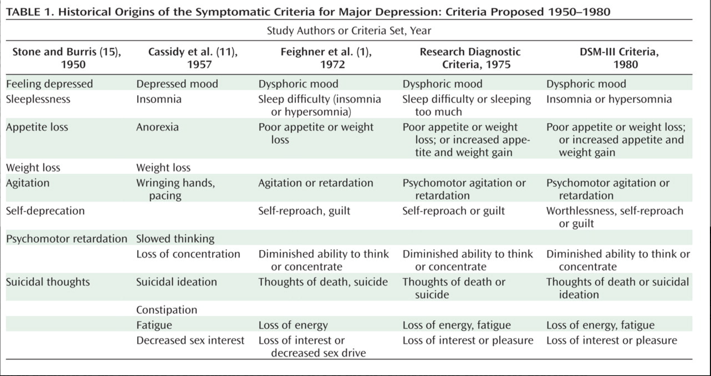
Kendler et al. 2010 · adapté de Fried 2022
Kendler et al. 2010 · adapté de Fried 2022
Le cas de la dépression majeure
1 030 profils symptomatiques uniques
parmi 3 703 patients diagnostiqués MDD — le profil le plus fréquent : 1.8%
Fried & Nesse 2015, Journal of Affective Disorders
PATIENT A
« Dépression majeure »
- Insomnie
- Agitation
- Culpabilité
- Perte de poids
- Anhédonie
PATIENT B
« Dépression majeure »
- Hypersomnie
- Ralentissement
- Fatigue
- Gain de poids
- Concentration ↓
Même diagnostic. Aucun symptôme en commun. Même maladie ?
La nature continue des symptômes dépressifs
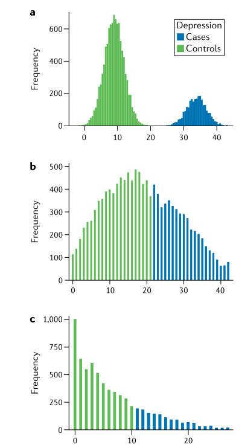
Pas de seuil naturel
La distribution des symptômes dépressifs est continue — absent → léger → modéré → sévère
Le DSM trace une ligne dans ce continuum. Le seuil 5/9 est une convention, pas un point d’inflexion naturel.
Parallèle :
La tension artérielle est sur un continuum. Le seuil d’« hypertension » est une convention d’experts — pas un fait de la nature.
« Practical kinds », pas « natural kinds »
« Imaginez que vous héritez d’une bibliothèque de 20 000 volumes. Vous pouvez les classer par auteur, couleur, taille, sujet ou titre. Il n’y a pas de classification «vraie» qui existe dans le monde à découvrir. »
— Kendler, Zachar & Craver 2011
CRITÈRE CONSTITUTIF
Il EST la chose.
L’or a 79 protons — ce critère ne pointe pas vers l’or, il CONSTITUE l’or. Tout ce qui a 79 protons est de l’or, point.
CRITÈRE INDEXICAL
Il POINTE vers la chose.
Un panneau « Paris 200 km » pointe vers Paris mais ne fait pas partie de Paris. Déplacez le panneau — Paris ne bouge pas.
Les critères du DSM sont indexicaux — ils indiquent le trouble, ils ne le définissent pas.
Les catégories du DSM sont des practical kinds — construites, utiles, mais ni naturelles ni définitives.
Mais le fait que les CATÉGORIES sont construites ne veut pas dire que les MÉCANISMES sont imaginaires.
La carte est imparfaite — mais le territoire est réel. On va maintenant regarder le territoire : les structures cérébrales, les circuits, les réseaux. Les briques à partir desquelles les troubles se construisent.
Vue d’ensemble : 13 structures, un système
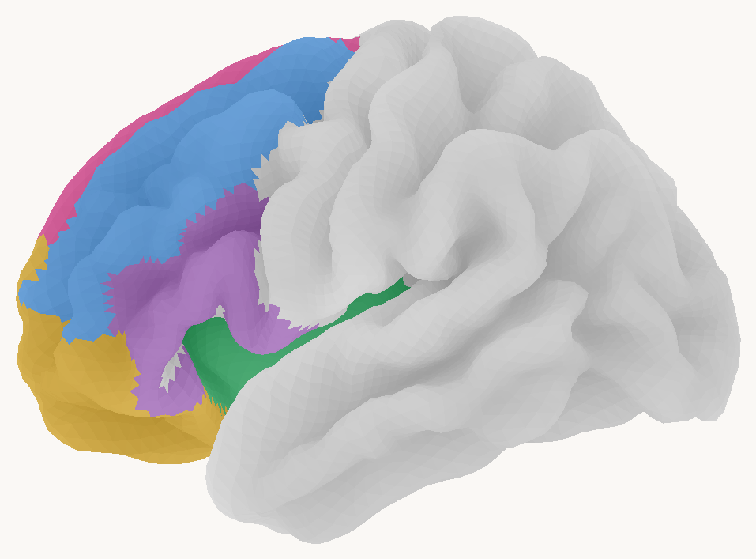
dmPFC
Médial
vmPFC
dACC
Antérieur
pgACC
Insula
Latéral
dlPFC
vlPFC
7 régions corticales + 6 structures sous-corticales.
Aucune ne fonctionne seule. Les couleurs sont maintenues dans tout le cours.
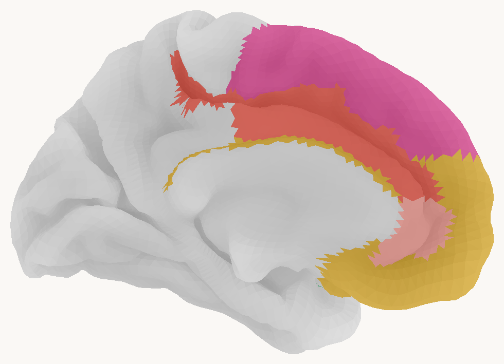
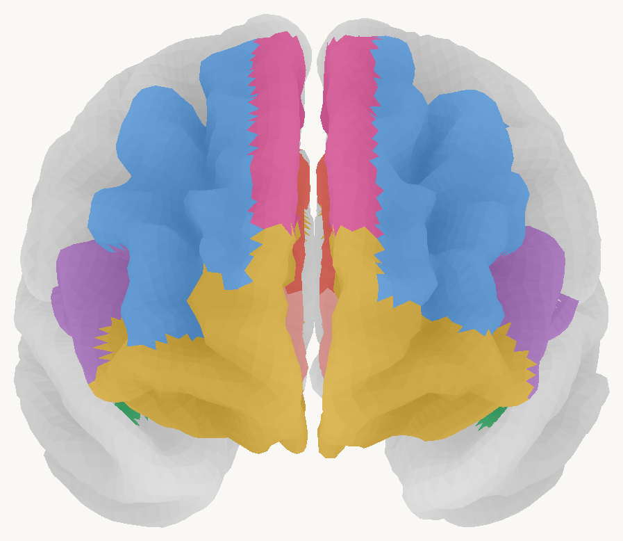
dlPFC vlPFC dmPFC vmPFC dACC pgACC Insula
7 régions corticales + 6 structures sous-corticales. · Aucune ne fonctionne seule. Les couleurs sont maintenues dans tout le cours.
dlPFC — le chef d’orchestre cognitif

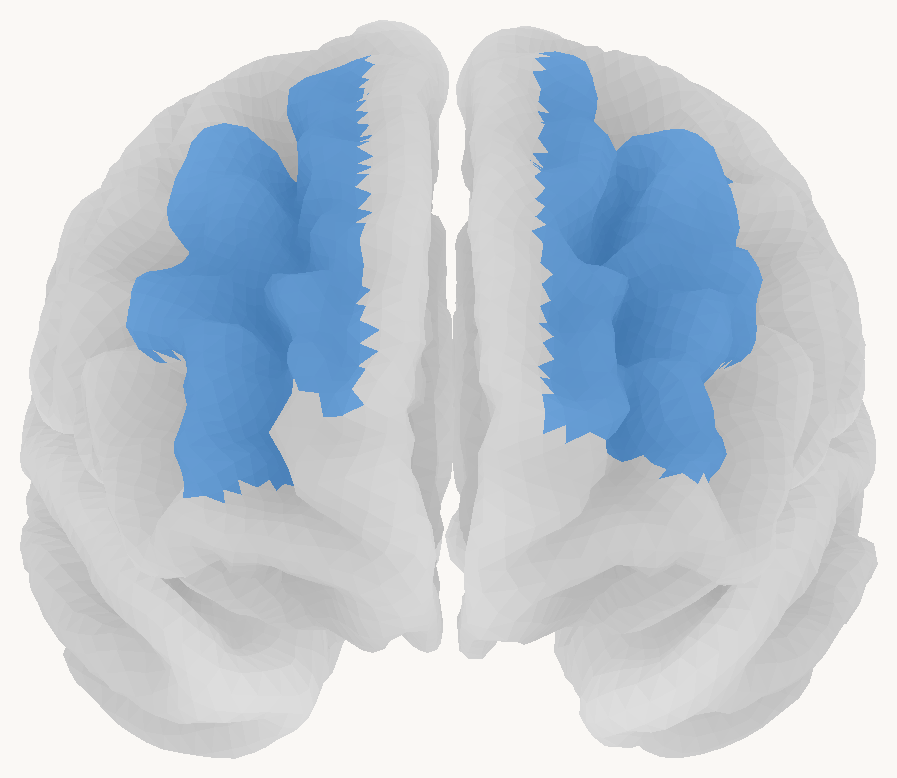
LOCALISATION
Convexité latérale · gyrus frontal moyen (BA46, BA9)
30% de la surface corticale = PFC
FONCTION
Mémoire de travail (BA46) · planification · attention dirigée
Organisation du comportement vers un but · multitâche
CONNEXIONS
Réseau dorsal attentionnel : dlPFC ↔ cortex pariétal postérieur
Boucle CSTC cognitive : dlPFC → noyau caudé → pallidum → thalamus → dlPFC
Thalamus médiodorsal (parvocellulaire) → dlPFC
« Mais pourquoi le dlPFC est hypoactif en dépression ? Qui contrôle le contrôleur ? »
dlPFC en clinique
DÉPRESSION MAJEURE
« Je n’arrive plus à me concentrer, je ne peux plus travailler »
Hypoactivation dlPFC → cible rTMS (haute fréquence, dlPFC gauche)
TDAH
L’ado qui saute d’une tâche à l’autre
dlPFC ne maintient pas le focus → psychostimulants ↑ DA/NE dans la boucle dlPFC → caudé
SCHIZOPHRÉNIE (SX NÉGATIFS)
Patient apathique, désorganisé
Deficit Da DLPFC – sx cognitive
VIGNETTE
Homme 55 ans, AVC frontal G
« Pierre qui roule n’amasse pas mousse » → « Les pierres ne font pas pousser la mousse. » Syndrome dysexécutif classique.
« Mais pourquoi le dlPFC est hypoactif en dépression ? Qui contrôle le contrôleur ? »
vlPFC — le frein et la parole
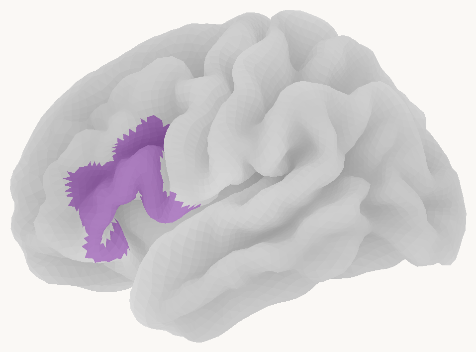
LOCALISATION
Gyrus frontal inférieur — pars opercularis (BA44), triangularis (BA45), orbitalis (BA47)
DEUX FONCTIONS CLÉS
1. Aire de Broca (BA44/45) — langage expressif (hémisphère dominant) – G
2. Inhibition de réponse — capacité de « freiner » une action déjà initiée – D
Manie
TPL
TDAH
Logorrhée, dépenses impulsives, désinhibition
Passage à l’acte — « sait » qu’il ne devrait pas, ne peut pas s’arrêter
Impulsivité comportementale (agir avant de réfléchir)
Passage à l'acte — « sait » qu'il ne devrait pas, ne peut pas s'arrêter TDAH · Impulsivité comportementale vlPFC = le frein · dlPFC = le planificateur · vmPFC = le juge de valeur
vmPFC — valuation et extinction de la peur
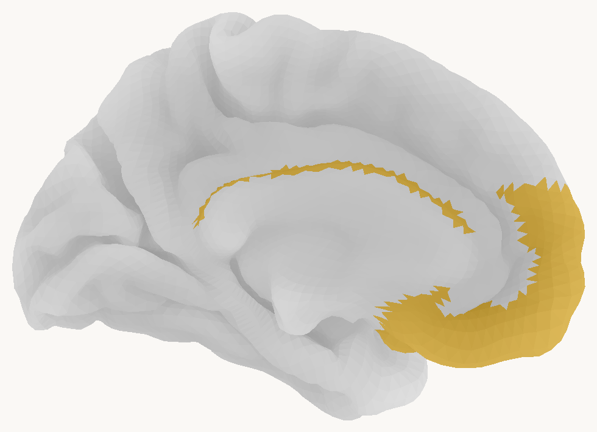
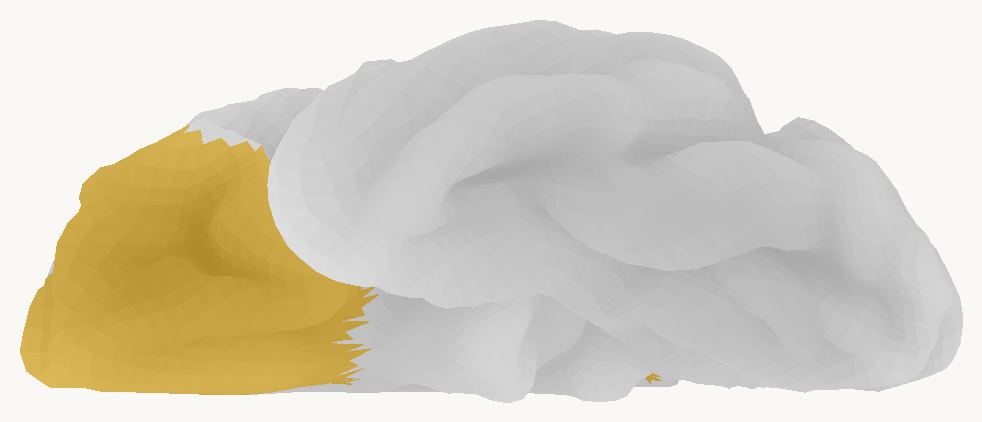
LOCALISATION
Surface ventrale + médiale inférieure. OFC (BA11/12/13/14), cortex frontopolaire (BA10), mPFC inférieur.
FONCTIONS OFC
- Valeur hédonique des stimuli
- Pulsions appétitives / récompense
- Inhibition des distractions
- Tact social, retenue
FONCTIONS vmPFC
- Marqueurs somatiques
- Décision émotionnelle / « gut feeling »
- Jugements moraux
- Frein sur l’amygdale (top-down)
- Extinction de la peur
CONNEXIONS
Limbique (ACC, amygdale, parahippocampe) · striatum ventral · boucle orbitale BG : OFC → caudé (hyperactive dans le TOC)
« Si le vmPFC évalue la valeur et éteint la peur... qui décide ce qui est saillant ? »
vmPFC en clinique
DFT VARIANTE COMPORTEMENTALE
Commentaires sexuels inappropriés, mange compulsivement des sucreries, aucune conscience du changement
= atrophie orbitale classique
TOC — BOUCLE ORBITALE
vmPFC: “Is this safe? Can I stand down?”
OFC: “How much does this matter? Is this resolved yet? Is there value in doing the act again?”
TSPT
vmPFC hypoactif → ne peut plus éteindre la peur conditionnée
Rationnel de l’exposition : renforcer vmPFC → amygdale (plasticité Hebbienne)
PSYCHOPATHIE / VIGNETTE
Décisions « froides », utilitaires. Trolley problem : pousse l’homme du pont sans hésitation (lésion vmPFC).
Phineas Gage 2.0 — « il n’est plus le même »
Distinction clé : TOC = menace CACHÉE (boucle orbitale, insight intact) vs Anxiété = menace VISIBLE (amygdale, viscérale)
TOC = menace CACHÉE (boucle orbitale, insight intact) Anxiété = menace VISIBLE (amygdale, viscérale)
dmPFC — le réseau du soi
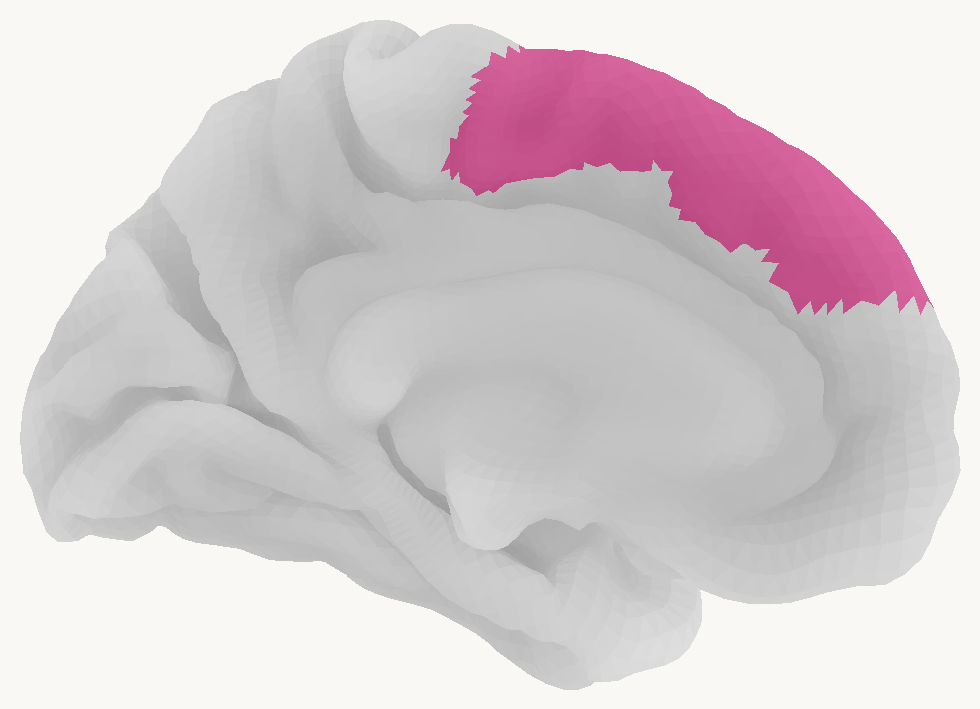
LOCALISATION
Surface médiale supérieure, antérieur aux aires motrices (BA9-11 médial)
HUB CENTRAL DU DMN (RÉSEAU DU MODE PAR DÉFAUT)
Actif pendant la rêverie, l’absorption cognitive, les tâches qui ne mobilisent PAS le monde extérieur
Tâches autoréférentielles · états mentaux intérieurs · drive motivationnelle
DMN = dmPFC + PCC/précunéus + lobule pariétal inférieur + hippocampe
DÉPRESSION APATHIQUE
Pas triste — VIDE. Apathie, anhédonie, abulie. dmPFC hypoactif (pas hyperactif). Deux mécanismes dmPFC ≠ en dépression.
RUMINATION DÉPRESSIVE
« Qu’est-ce que j’ai fait de mal ? Pourquoi moi ? » DMN qui ne s’éteint pas + hippocampe fournit les souvenirs négatifs.
Rumination dépressive — DMN qui ne s'éteint pas + hippocampe fournit les souvenirs négatifs Dépression apathique — pas triste, VIDE. dmPFC hypoactif. Deux mécanismes dmPFC ≠ en dépression.
dACC — le commutateur de saillance
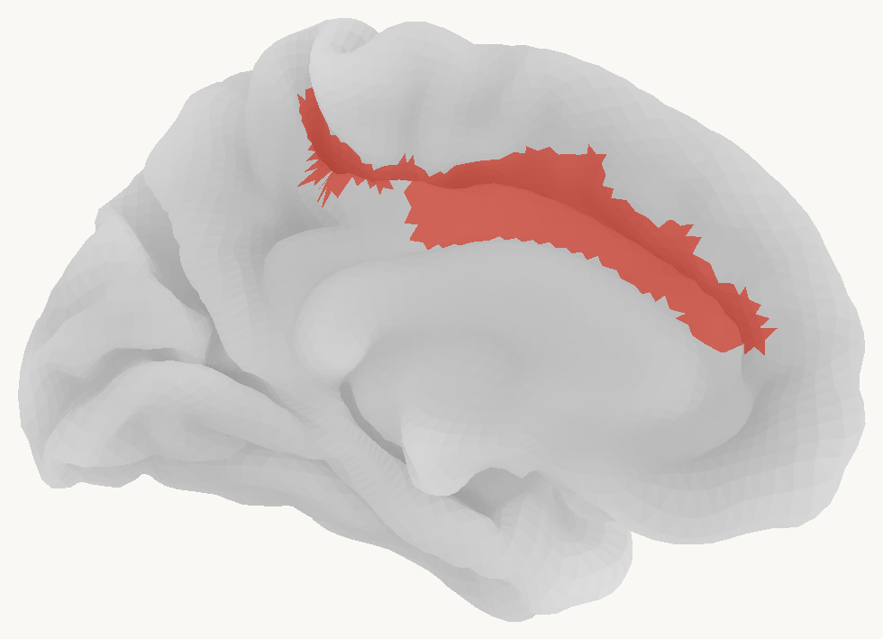
LOCALISATION
Cortex cingulaire antérieur dorsal, au-dessus du genou du corps calleux
NŒUD CENTRAL DU RÉSEAU DE SAILLANCE (SN)
Avec l’insula antérieure = le « switch » entre CEN et DMN
Détection de saillance · monitoring d’erreurs · détection de conflits
SN trop actif
- Anxiété généralisée
SN ne bascule plus
- Dépression
SN trop faible
- Autisme
Tout est saillant, alarme permanente
Mode auto-référentiel persistant, rumination
Stimuli sociaux non marqués comme saillants
SN ne bascule plus → Dépression Mode auto-référentiel persistant, rumination
SN trop faible → Autisme Stimuli sociaux non marqués comme saillants
« L'ACC et l'insula = le réseau de saillance. Ce réseau décide ce qui mérite votre attention. »
pgACC / sgACC — l’affect douloureux et la charge vegetative
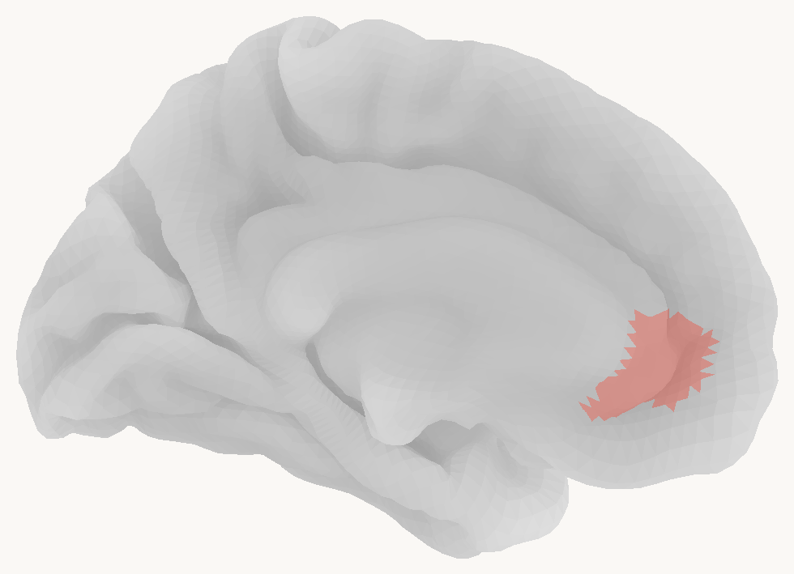
LOCALISATION
pgACC : devant le genou du CC (BA33, BA24, BA32) · sgACC : sous le genou (BA25)
pgACC
- Expérience émotionnelle
- Douleur affective et souffrance
- Integration viseco-affective
- Connection limbique
sgACC (BA25)
- États émotionnels négatifs
- Projections → hypothalamus
- → accompagnements végétatifs
- Cible DBS (Mayberg)
DÉPRESSION — DBS SUR BA25 (MAYBERG 2005)
sgACC hypermétabolique → DBS haute fréquence (~130 Hz) → sx végétatifs améliorés en jours, humeur en semaines
Logique « bottom-up d’abord » : projections autonomes (hypothalamus, tronc) se calment → sommeil, appétit, énergie reviennent AVANT l’humeur
⚠ RCT BROADEN (2013) : critère primaire non atteint à 6 mois · Études ouvertes : ~50-60% réponse à long terme · Direction actuelle : ciblage par tractographie individualisée (Riva-Posse et al.)
« L'ACC et l'insula = le réseau de saillance. Quand il se trompe, tout déraille. »
Amygdale — la sentinelle
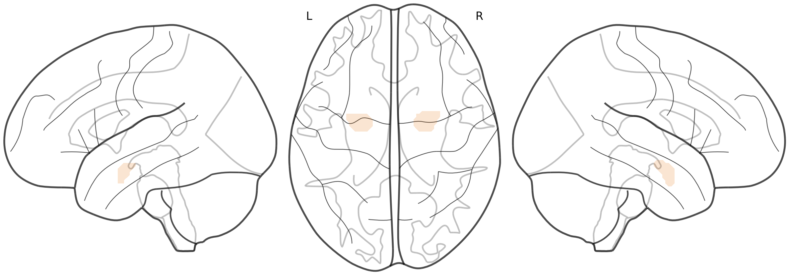

LOCALISATION
Lobe temporal médial antérieur, devant l’hippocampe
13 sous-noyaux : basolatéral (entrée) · cortical (olfactif) · centromédial (sortie)
FONCTION
- Détecteur de danger — menaces VISIBLES
- Conditionnement de peur implicite
- Flashbulb memories · interactions sociales
Efférences massives → hypothalamus, tronc,
PFC, striatum. Stria terminalis + voie amygdalofugale ventrale.
Voie rapide : thalamus → amygdale (LeDoux)
⚠ Données surtout animales; contesté chez l’humain
Efférences massives → hypothalamus, tronc, · PFC, striatum. Stria terminalis + voie amygdalofugale ventrale. Voie rapide : thalamus → amygdale (LeDoux) · ⚠ Données surtout animales; contesté chez l'humain
Amygdale en clinique
TSPT
Le vétéran qui sursaute au bruit d’une portière.
Conditionnement implicite → réactivation. Hippocampe encode où/quand, amygdale encode l’émotion.
TROUBLE PANIQUE
Amygdale étendue (centromédial + BNST) → hypothalamus → fight-or-flight
Tachycardie, sueurs, dyspnée. Peur aiguë ET anxiété soutenue.
TPL (PERSONNALITÉ LIMITE)
Hyperréactivité amygdalienne + régulation top-down déficiente (PFC→amygdale)
Amygdale = menace externe / perceptive / émotionnellement saillante OFC–CSTC = doute, erreur, menace cognitive ou incomplétude
Hippocampe — la mémoire contextuelle
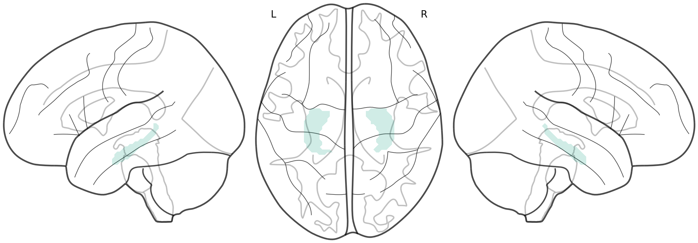
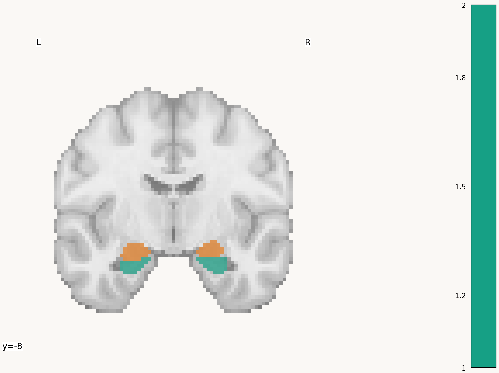
FONCTION
- Mémoire épisodique (lésion bilat. → amnésie)
- Navigation spatiale (cellules de lieu/grille)
- Dépendance contextuelle : quand, où
LOCALISATION
Lobe temporal médial, allocortex
Gyrus denté + CA1-CA3 + subiculum + cortex entorhinal
TSPT : passé envahit le présent
Alzheimer · Korsakoff
N’ENCODE PAS : mémoire sémantique (néocortex) · mémoire de travail (dlPFC) · procédurale (BG)
N'ENCODE PAS : mémoire sémantique (néocortex) · mémoire de travail (dlPFC) · procédurale (BG) TSPT : passé envahit le présent Alzheimer · Korsakoff
Insula — le sixième sens
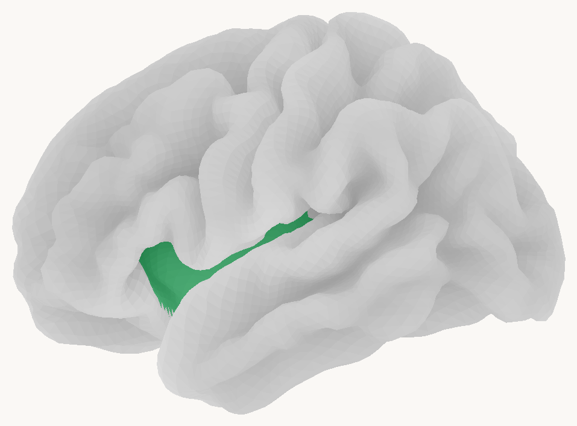
LOCALISATION
Cachée dans le sillon latéral, sous les opercules. Antérieure (3 gyri courts) + postérieure (2-3 gyri longs)
vAI — ventrale antérieure
Émotions, sensation viscérale, douleur, empathie, agentivité (« libre arbitre »)
dAI — dorsale antérieure
Attention, mémoire de travail, langage. Possible vrai site de l’aire de Broca.
PI — postérieure
Intéroception, proprioception, chaleur, toucher, vestibulaire
Noeud du réseau de saillance (SN) avec le dACC
Hallucinations
Self-tagging échoue → voix
Craving
Lésion insulaire → arrêt tabac
Passivité
Pensées insérées, vol de pensée
Panique
Cercle intéroceptif vicieux
Noeud du réseau de saillance (SN) avec le dACC
Panique · Cercle intéroceptif vicieux Hallucinations · Self-tagging échoue → voix Craving · Lésion insulaire → arrêt tabac Passivité · Pensées insérées, vol de pensée
« L'insula vous dit ce que votre corps ressent. Quand elle dysfonctionne, vous ne savez plus. »
Ganglions de la base — trois boucles, trois fonctions
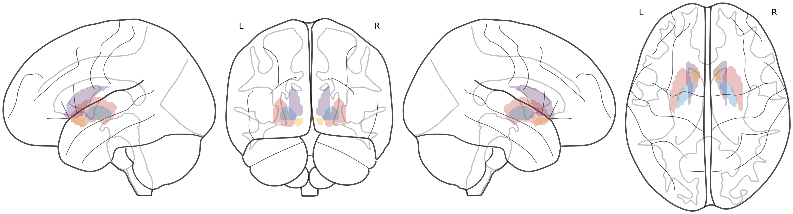
Striatum (caudate + putamen) = INPUT cortical · Pallidum = OUTPUT vers thalamus · Même architecture pour mouvement, cognition, émotion
1. BOUCLE MOTRICE (putamen)
AMS → putamen → pallidum → thalamus → AMS · Sélection et exécution du mouvement · Dopamine nigro-striée abaisse le seuil
2. BOUCLES COGNITIVO-EXÉCUTIVES (caudate)
Boucle dlPFC → caudé → fonctions exécutives · Boucle orbitale : OFC → caudé → menace CACHÉE (hyperactive dans le TOC)
3. BOUCLE LIMBIQUE (NAcc)
ACC + OFC + hippocampe + amygdale → NAcc → voie de récompense (erreur de prédiction)
D1 (directe) → action · D2 (indirecte) → inhibition
DA active D1 + inhibe D2 → bascule vers l’action
3. BOUCLE LIMBIQUE (NAcc) · ACC + OFC + hippocampe + amygdale → NAcc → voie de récompense (erreur de prédiction) D1 (directe) → action · D2 (indirecte) → inhibition · DA active D1 + inhibe D2 → bascule vers l'action
Ganglions de la base en clinique
PARKINSON
Boucle motrice : DA nigro-striée ↓ → akinésie
AUSSI : dépression, apathie (boucles limbique et cognitive atteintes). Excès DA → dyskinésies.
TOC — LA BOUCLE QUI NE S’ARRÊTE PAS
OFC → caudé → pallidum → thalamus → OFC hyperactive. Vérifie, vérifie, vérifie.
Le TOC n’est pas « le caudé » — c’est la BOUCLE entière.
ADDICTION
NAcc : récompense maximale quand inattendue (erreur de prédiction).
Renforcement intermittent → même mécanisme que les machines à sous et le syndrome de Stockholm.
DYSRÉGULATION DOPAMINERGIQUE
Patient parkinsonien accro à sa L-DOPA → hypersexualité, jeu pathologique, punding.
Même boucle limbique, stimulation non physiologique.
KINÉSIE PARADOXALE
Patient parkinsonien profondément akinétique qui court librement d’un bâtiment en feu.
L’amygdale recrute les voies motrices via la boucle limbique. Preuve que les boucles ne sont PAS séparées.
« Les BG sont le carrefour. Tout passe par ici. Mais qui coordonne l’ensemble ? »
« Mais aucune structure ne fonctionne seule »
Structure
Fonction clé
dlPFC
Mémoire de travail, planification
vlPFC
Langage, inhibition de réponse
vmPFC
Valuation, extinction de la peur
dmPFC
Réseau du soi, DMN
dACC
Saillance, switch CEN/DMN
pgACC
Émotion, tristesse, autonome
Insula
Intéroception, saillance
Amygdale
Détection de menace visible
Hippocampe
Mémoire contextuelle
Caudate
Boucle cognitive/orbitale
Putamen
Boucle motrice
Pallidum
Output vers thalamus
Accumbens
Récompense, erreur de prédiction
Trouble associé
Dépression (cognitif), TDAH, schizophrénie (négatifs)
Aphasie de Broca, impulsivité (manie, TPL)
TOC (boucle orbitale), DFT, TSPT, psychopathie
Rumination dépressive, apathie
Anxiété, TOC (monitoring d’erreurs)
Dépression (cible DBS), psychopathie
Panique, hallucinations, craving
TSPT, trouble panique, TPL
TSPT, Alzheimer, Korsakoff
TOC, TDAH
Parkinson
Parkinson (DBS sur STN)
Addiction
Vous avez appris 13 pièces. Après la pause, on apprend comment elles jouent ensemble en réseaux.
Si la dépression = dlPFC hypoactif + DMN hyperactif + sgACC bloqué + hippocampe atrophié... est-ce encore UN trouble ?
« Neurons that fire together wire together »
Hebb, 1949 — le principe fondamental de la plasticité synaptique
LTP — POTENTIALISATION À LONG TERME
Co-activation répétée → synapse renforcée
NMDA détecte la co-activation → cascade → récepteurs AMPA modifiés (conductance ↑)
Spécificité : seules les synapses actives se renforcent, pas les voisines
LTD — DÉPRESSION À LONG TERME
Stimuli faibles ou aléatoires → synapse affaiblie
Aussi médié par NMDA, mais cascade différente → AMPA internalisés
Mécanisme de l’oubli actif et de l’extinction
ASSOCIATIVITÉ — LA CLÉ CLINIQUE
Un input faible (ascenseur) COUPLÉ à un input fort (panique) → LTP associative → la prochaine fois, l’ascenseur seul déclenche la peur.
C’est le conditionnement de peur en termes synaptiques.
Chaque intervention en psychiatrie agit sur la plasticité : ISRS → plasticité en aval (semaines) · TCC → LTP préfrontal · rTMS → LTP/LTD forcée
Chaque intervention en psychiatrie agit sur la plasticité : ISRS → plasticité en aval (semaines) · TCC → LTP préfrontal · rTMS → LTP/LTD forcée
Comment les structures deviennent des circuits
BOUCLES CORTICO-BASALES-THALAMO-CORTICALES (CBTC)
MOTRICE
putamen ← cortex moteur
Parkinson, Tourette
COGNITIVE
caudate ← dlPFC
Déficits exécutifs, TDAH
LIMBIQUE
NAcc ← vmPFC/OFC
Addiction, anhédonie
ORBITALE
caudate ventral ← OFC
TOC (menace cachée)
La dopamine module chaque boucle : elle signale l’erreur de prédiction — la différence entre récompense attendue et obtenue.
La dopamine module chaque boucle : elle signale l'erreur de prédiction — la différence entre récompense attendue et obtenue.
Le chemin dans la neige
Plus un chemin est emprunté, plus il devient facile à suivre → LTP
Moins un chemin est utilisé, plus il s’efface → LTD
Le vieux chemin existe encore sous la surface — c’est pourquoi les rechutes sont possibles.
CONDITIONNEMENT DE PEUR
Trauma (input fort) + contexte neutre (ascenseur) → LTP associative → le contexte seul déclenche la peur.
Le chemin est tracé.
EXPOSITION THÉRAPEUTIQUE
Nouveau chemin (sécurité + stimulus) en compétition avec l’ancien. Avec la répétition, le nouveau domine.
L’ancien ne disparait pas.
RUMINATION
Chaque rumination renforce le chemin dmPFC → hippo → PCC (boucle DMN). Le chemin devient un sillon.
Le patient ne peut plus en sortir.
Les traitements = modifier les chemins.
Psychothérapie, pharmacothérapie, neuromodulation — trois facons d’agir sur les memes circuits. (C2 + C4)
On a vu les pieces, le mecanisme de connexion, et les circuits. Maintenant : quand on regarde le cerveau entier a l’IRMf, qu’est-ce qu’on voit ?
Les traitements = modifier les chemins Psychothérapie, pharmacothérapie, neuromodulation — trois façons d'agir sur les mêmes circuits Maintenant : le cerveau entier à l'IRMf
Trois reseaux, un cerveau
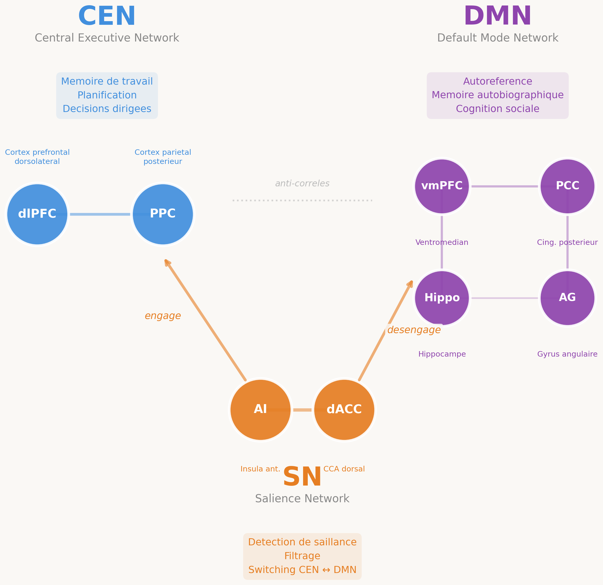
Trois reseaux, un cerveau
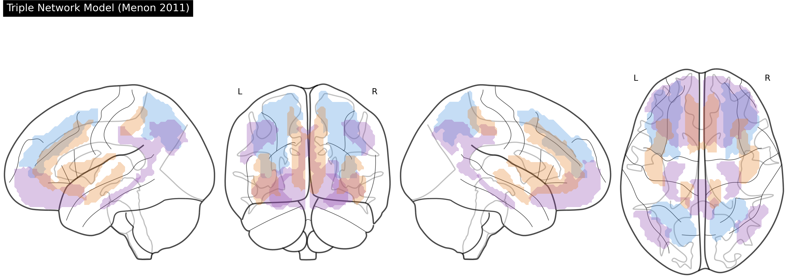
CEN — dlPFC + PPC
DMN — vmPFC + PCC + Hippo + AG
SN — Insula ant. + dACC
CEN — dlPFC + PPC DMN — vmPFC + PCC + Hippo + AG SN — Insula ant. + dACC
Le SN : l’aiguilleur
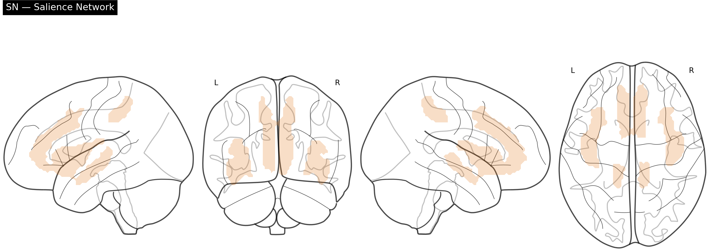
ENGAGE CEN
Stimulus saillant detecte → recrute dlPFC + PPC
LE THERMOSTAT
AI (insula ant.) + dACC = causal outflow hub
SUPPRIME DMN
Desactive autoreference → arrete la rumination
Le SN explique pourquoi un meme stimulus peut etre ignore ou declencher une crise.
Le CEN : le chef d’orchestre

MEMOIRE DE TRAVAIL
Maintien et manipulation de l’information en ligne
dlPFC + PPC
Cortex prefrontal dorsolateral + parietal posterieur
CONTROLE ATTENTIONNEL
Focus dirige, planification, resolution de problemes
Le CEN s'active quand vous pensez. Il se desactive quand vous revez. Le switch = le SN.
Le DMN : le monde interieur
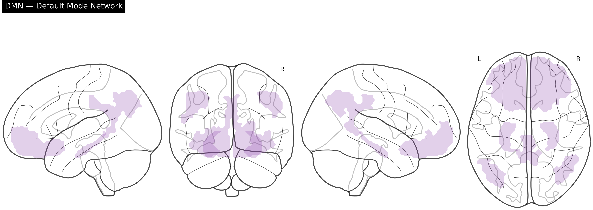
AUTOREFERENCE
Pensee sur soi, introspection, identite narrative
vmPFC + PCC + HIPPO
Ventromedian + cingulaire post. + hippocampe + gyrus angulaire
MEMOIRE AUTOBIO.
Souvenirs personnels, simulation du futur, cognition sociale
Quand le DMN ne s'eteint pas, le patient rumine. C'est la depression vue par les circuits.
Le triple réseau en pathologie
Le même trio de réseaux explique des troubles très différents. La différence = quel réseau, quel pattern.
| Trouble | SN | DMN | CEN | Pattern |
|---|---|---|---|---|
| Dépression | Bascule inefficace hors du mode interne | Hyperconnectivité auto-référentielle / rumination | Hypoconnectivité, recrutement insuffisant | Cerveau « coincé » dans l'interne |
| Anxiété | Hypervigilance, saillance de menace exagérée | Rumination anticipatoire / menaces futures | Sur-recruté, analyse de menace excessive | Tout devient potentiellement dangereux |
| Schizophrénie | Saillance aberrante | Intégration interne perturbée / hubs médiaux mal coordonnés | Déficits diffus de contrôle cognitif | Attribution anormale de sens aux stimuli |
| Dépendance | Saillance capturée par les cues de drogue | Autoreprésentation organisée autour de la substance | Contrôle inhibiteur affaibli | La drogue > récompenses naturelles |
Même architecture, patterns différents → transdiagnostique, pas catégoriel.
Mais ce n’est pas un diagnostic
Le modele triple reseau decrit des patterns, pas des categories.
Deux patients « deprimes » peuvent avoir des profils reseau opposes.
Besoin de mesurer les circuits individuellement.
PATIENT A — PROFIL RUMINATIF
DMN hyperactif SN coince sur DMN CEN sous-recrute
- Rumination constante, ne peut pas se concentrer
PATIENT B — PROFIL COGNITIF
CEN hypoactif (dlPFC) DMN normal SN fonctionnel
- Ralentissement cognitif, pas de rumination
Meme diagnostic DSM. Circuits differents. Traitements differents.
Et si on pouvait mesurer ces circuits chez chaque patient ?
De Menon a Williams : la promesse
MENON 2011
Le modele theorique
3 reseaux (CEN, DMN, SN)
Explique POURQUOI les troubles cognitifs et emotionnels emergent
Framework transdiagnostique
« Pourquoi ce patient souffre-t-il ? »
WILLIAMS 2016 → TOZZI 2024
L’application clinique
6 circuits mesurables par IRMf
Chaque circuit → un biotype Chaque biotype → un traitement
Precision psychiatry
« Comment traiter CE patient ? »
On passe du « pourquoi » au « comment traiter ».
Section 6 : les 6 circuits de Williams, les biotypes, et ce que ca change pour vos patients.
Deja en clinique : la segregation du SN predit la reponse a la rTMS (Liston 2014, Godfrey 2022). La connectivite DMN se normalise sous ketamine (Evans 2018).
Le probleme du traitement actuel
~50%
des patients MDD ne repondent pas au premier antidepresseur
6-8 semaines d’attente par essai
Pourquoi ?
On traite « la depression » — pas le patient
« Multiple types of dysfunction are conflated within one group average »
— Williams 2016
Williams a propose une solution : mesurer les circuits, pas les symptomes.
Williams : 6 circuits, 6 biotypes
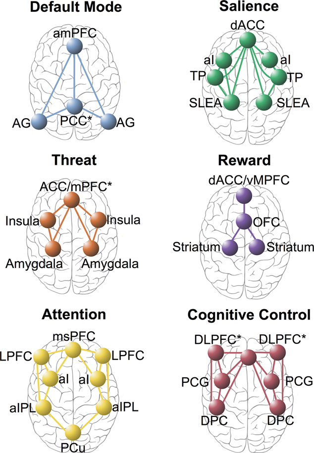
1. Default Mode
vmPFC + PCC → Rumination
2. Salience
ACC + insula → Apprehension anxieuse
3. Threat (affect negatif)
Amygdale + hippocampe → Dysregulation de la menace
4. Reward (affect positif)
Striatum ventral + OFC → Anhedonie
5. Attention
Frontoparietal → Inattention
6. Cognitive Control
dlPFC + ACC → Dyscontrole cognitif
Chaque patient a un PROFIL — pas un seul circuit affecte. Le meme diagnostic cache des mecanismes differents.
Six profils, six biotypes proposé
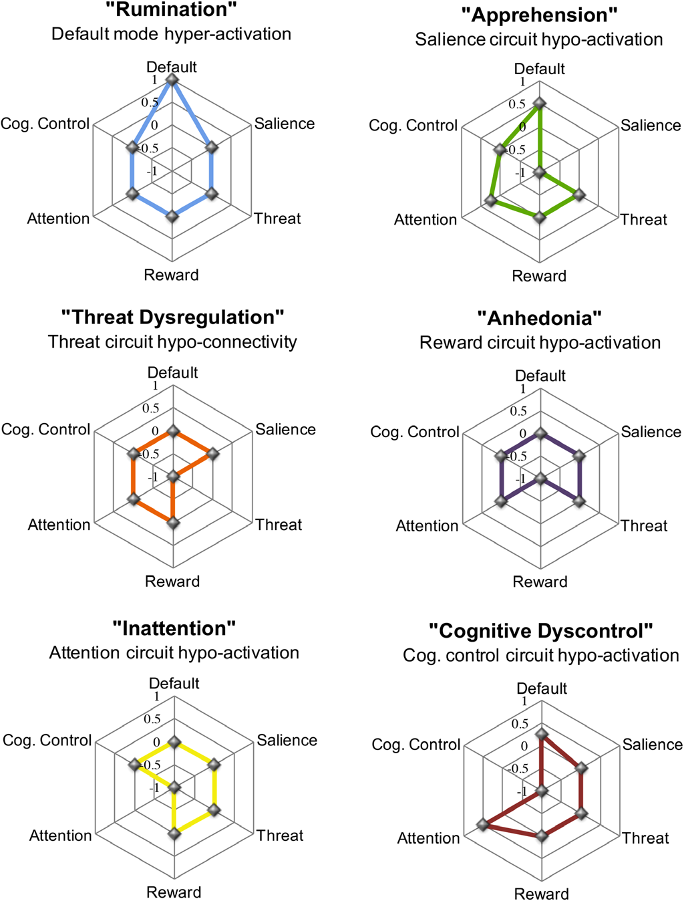
Chaque biotype a un profil distinct
Les axes du radar = les 6 circuits L’amplitude = le degre de dysfonction
Un patient n’est pas « un biotype » — il a un profil multi-circuit.
Rumination
DMN hyperactif
Apprehension
SN hyperactif
Threat Dysreg.
Amygdale-ACC altere
Anhedonie
Reward hypoactif
Inattention
Attention hypoconnecte
Cog. Dyscontrol
dlPFC hypoconnecte
Threat Dysreg. Amygdale-ACC altere
Anhedonie Reward hypoactif
Inattention Attention hypoconnecte
Cog. Dyscontrol dlPFC hypoconnecte
L’analogie cardiaque
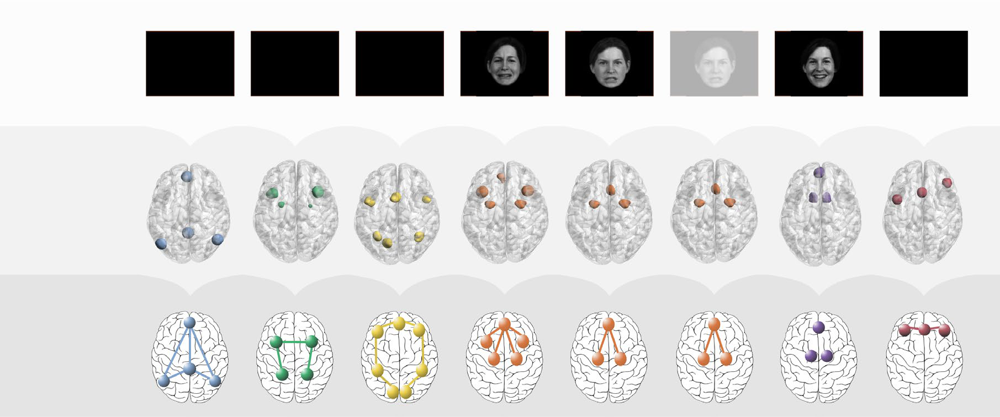
CARDIOLOGIE
ECG repos + epreuve d’effort → identifie la pathologie specifique → guide le traitement
PSYCHIATRIE (TOZZI 2024)
fMRI repos + tache cognitive → identifie le biotype (n=801) → donnees traitement prelim (n=250)
CARDIOLOGIE · ECG repos + epreuve d'effort · → identifie la pathologie specifique · → guide le traitement PSYCHIATRIE (TOZZI 2024) · fMRI repos + tache cognitive · → identifie le biotype (n=801) · → donnees traitement prelim (n=250)
Focus : le biotype cognitif
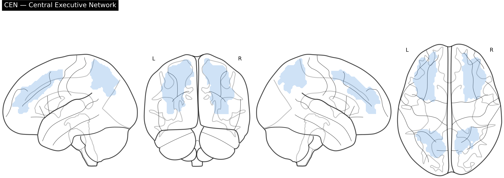
Hack et al. 2023
JAMA Network Open · iSPOT-D trial
Pistes therapeutiques (a valider) :
- 27% des patients MDD (n=712, iSPOT-D)
- Deficits : inhibition, memoire de travail, vitesse
- dlPFC hypoactif bilateral (CEN deficit)
- Reponse ISRS significativement plus faible
- Invisible au PHQ-9 / Hamilton seuls
- rTMS sur dlPFC gauche ?
- Remediation cognitive ?
- Alternatives aux ISRS a explorer
« Je n'arrive plus à penser » — et si c'était le profil primaire ? Hack et al. 2023, JAMA Network Open Goldstein-Piekarski et al. 2021, Biol Psychiatry
Du biotype au traitement
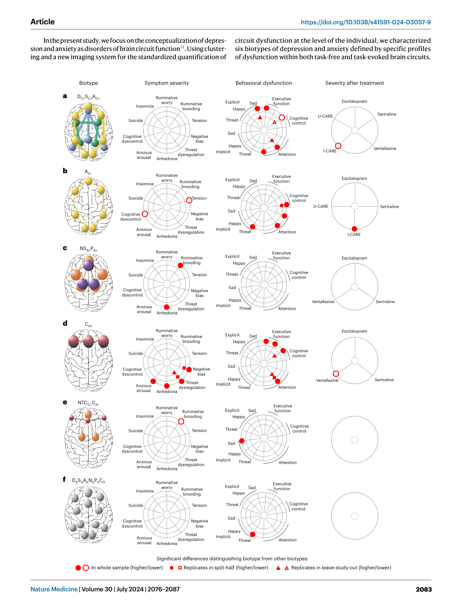
Tozzi et al. 2024 · Nat Med · n=801
BIOTYPE CA+ (32%)
Cognitive hyperactivation + anhedonie 64% repondent a la venlafaxine (IRSN) 40% atteignent la remission
BIOTYPE DC+SC+AC+ (21%)
DMN + salience + attention hyperconnectes 42% repondent a la therapie comportementale (vs 26% pour AC-)
BIOTYPE AC- (20%)
Attention hypoconnecte + impulsivite PIRE reponse a la therapie comportementale (26%) → besoin d’une approche differente
Mesurer un circuit → predire un traitement → confirmer empiriquement
Mesurer un circuit → predire un traitement → confirmer empiriquement
Les limites — soyons honnetes
CE QUI EST SOLIDE
- Les biotypes sont reproductibles (replication split-half dans Tozzi)
- Transdiagnostiques (confirme par 4 cohortes independantes)
- L’appariement biotype-traitement montre des effets significatifs
- Le cadre theorique est coherent (Menon → Williams → Tozzi)
CE QUI MANQUE
- Preuve de concept, pas clinic-ready (fMRI standardisee pas disponible partout)
- Echantillon traitement petit (n=250 — besoin de validation prospective)
- Tailles d’effet modestes (beaucoup de comparaisons ne survivent pas)
- Pas encore de randomisation PAR biotype (la prochaine etape cruciale)
- Le temporal resolution de l’fMRI est insuffisante (secondes vs millisecondes)
C’est prometteur. Ce n’est pas encore la. Mais la direction est claire.
La psychiatrie va vers la precision — la question est quand, pas si.
Du circuit au systeme
MENON 2011
Le modele theorique 3 reseaux (CEN, DMN, SN) Pourquoi les troubles emergent
WILLIAMS 2016 TOZZI 2024
L’application clinique 6 circuits → 6 biotypes Comment traiter CE patient
RDoC + HiTOP
L’organisation systematique Domaines + spectres Comment classer TOUS les troubles
Williams & Menon : « quel circuit, quel traitement ? » RDoC — biologie d’abord HiTOP — taxonomie empirique dimensionnelle
RDoC : le cerveau d’abord
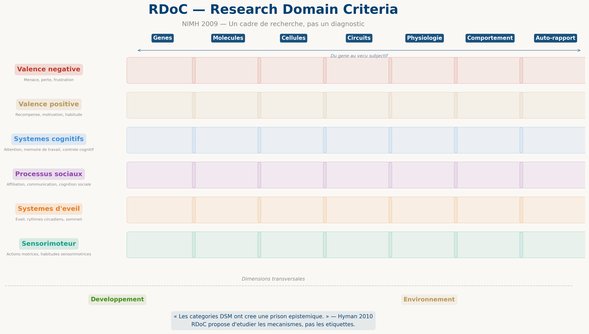
RDoC : forces et limites
CE QUI CHANGE
- Transdiagnostique : memes mecanismes across anxiety, depression, psychosis
- Dimensionnel : continuum sante → maladie, pas de frontiere arbitraire
- Integratif : genes → circuits → comportement dans un meme cadre
- Preuve de concept : B-SNIP biotypes (3 biotypes transdiagnostiques > DSM)
CE QUI MANQUE ENCORE
- Pas cliniquement actionnable — toujours un cadre de RECHERCHE
- Risque de reductionnisme biologique — « One cannot study in rats the belief that one is worthless » (Berenbaum 2013)
- Fiabilite test-retest modeste des mesures comportementales + neuro
- Sur-dependance a la matrice comme outil de financement (Morris 2022)
PREUVE DE CONCEPT : B-SNIP (Clementz et al. 2016)
Patients psychotiques (schizophrenie, schizoaffectif, bipolaire I) → 3 biotypes transdiagnostiques definis par cognition + electrophysiologie. Les biotypes = groupements plus valides que les diagnostics DSM.
RDoC etudie les mecanismes. Mais qui organise les phenotypes ? → HiTOP
HiTOP : organiser le spectre

HiTOP en pratique
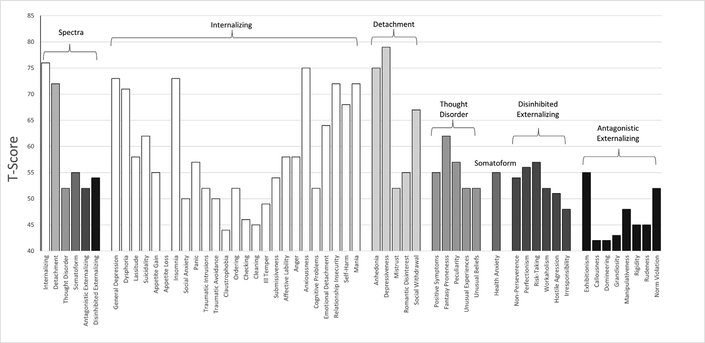
SCHIZOPHRENIE → DEUX SPECTRES
DSM : « Schizophrenie » (un diagnostic)
HiTOP :
Sx positifs → spectre trouble de la pensee Sx negatifs → spectre detachement
Meme patient, deux spectres, traitements differents.
LA PHARMACOLOGIE EST DEJA HiTOP
ISRS →
spectre internalisant entier (depression, anxiete, TOC, phobie)
Antipsychotiques →
spectre trouble de la pensee (psychoses toutes categories)
Stabilisateurs →
spectre manie / externalisant (bipolaire, impulsivite, agressivite)
Trois lentilles, un patient
DSM-5-TR
Convention administrative
Fiable (±), pas valide Necessaire pour la facturation Categories polythetics Comorbidite = artefact
QUAND : dossier medical, assurance, communication
RDoC
Cadre de recherche biologique
Genes → circuits → comportement 6 domaines × 7 unites d’analyse Transdiagnostique + dimensionnel Precision medicine vision
QUAND : recherche, comprendre les mecanismes, developper des biomarqueurs
HiTOP
Taxonomie empirique dimensionnelle
Spectres hierarchiques Profils dimensionnels Comorbidite = profil multi-spectre Deja comment on prescrit
QUAND : clinique quotidienne, mesure des outcomes, precision diagnostique
Ce ne sont pas des ennemis. Ce sont des lunettes differentes pour regarder le meme patient.
Les trois coexistent — la question est laquelle porter a quel moment.
Retour a la vignette
Femme, 34 ans. Rupture + conflit au travail. Depuis 3 mois : tristesse, insomnie, anhedonie, culpabilite, difficulte de concentration, perte d’appetit. PHQ-9 = 18 (severe).
Est-ce qu’elle a un trouble de sante mentale ?
LUNETTES DSM
Trouble depressif caracterise (F32.2) 5+ symptomes ≥ 2 semaines ✓ Souffrance cliniquement significative ✓
LUNETTES CIRCUIT
Biotype cognitif ? (dlPFC hypoactif) + rumination (DMN) ? → profil ruminatif ? Mesurer avant de traiter
LUNETTES HiTOP
Spectre internalisant Sous-facteur detresse (score eleve) Composantes : anhedonie + insomnie + concentration (profil multi-dimensionnel)
Quel cadre vous aide le plus a traiter CETTE patiente ? La reponse change selon ce que vous mesurez.
Le DSM vous donne un code. Les circuits vous donnent un mecanisme. HiTOP vous donne un profil.
Qu’est-ce qu’un trouble ? Trois propositions
PRACTICAL KINDS
Zachar 2000, 2014
Les categories psychiatriques ne sont ni naturelles ni arbitraires — ce sont des outils pragmatiques juges par leur utilite clinique.
« Il n’y a pas de classification ’vraie’ a decouvrir — il y a des classifications plus ou moins utiles. » — Kendler et al. 2011
MECHANISTIC PROPERTY CLUSTER KINDS
Kendler, Zachar & Craver 2011
Les troubles sont des ensembles flous maintenus par des reseaux causaux multi-niveaux (genes → circuits → social). Pas d’essence unique.
« To label one of these factors fundamental would be an act of fiat, not a reflection of causal structure. » — Kendler et al. 2011
RESEAUX DE SYMPTOMES
Borsboom 2017, Fried 2026
Les symptomes se causent mutuellement. Le « trouble » EST le reseau active. Pas d’entite latente sous-jacente.
« Un animal n’a pas un long cou parce qu’il est une girafe — on l’appelle girafe a cause de son long cou. » — Fried 2026
Les trois convergent : les troubles ne sont ni des maladies discretes ni des fictions. Ce sont des patterns complexes.
Le naturalisme doux
« The field increasingly accepts that conceptualizing mental disorder entails a consideration of both facts and values... moving away from strict scientism to soft naturalism. »
— Stein et al. 2024
LES FAITS
Circuits et mécanismes sont réels et mesurables
Menon, Williams, Tozzi montrent des niveaux de structure reproductibles
Mais un biomarqueur n’épuise jamais le trouble
LES VALEURS + UTILITÉ
Ce qui fait qu’un état devient un trouble n’est jamais seulement biologique
Souffrance, dysfonction, handicap, risque, contexte
Catégories pragmatiques — utiles, pas essentialistes
LA COMPLEXITE
Les symptômes interagissent entre eux
Les circuits interagissent entre eux
Et symptômes, circuits et contexte se modulent mutuellement
Le naturalisme doux unifie ces trois dimensions. Ni scientisme pur, ni relativisme.
L’humilite epistemique n’est pas un aveu de faiblesse — c’est une position clinique.
La reponse (provisoire)
Un trouble de sante mentale est...
…une configuration de souffrance impliquant des mécanismes psychobiologiques mesurables,
…décrite à l’aide de catégories pragmatiques,
…et comprise à la lumière de valeurs — souffrance, handicap, risque, contexte —
…sans jamais se laisser réduire à un seul de ces niveaux.
La question n’a pas de réponse nette — et c’est le point. L’humilité épistémique n’est pas un aveu de faiblesse — c’est une position clinique.
Aujourd’hui : la carte. Prochain cours : les territoires.
CE QU’ON A APPRIS
Les categories DSM = utiles mais limitees (le DSM le dit lui-meme)
Les structures cerebrales ≠ des iles — elles forment des circuits (Hebb)
Les circuits forment des reseaux (Menon) qu’on peut mesurer en biotypes (Williams)
L’avenir : organiser par spectres (HiTOP) + mecanismes (RDoC) + reseaux (Fried)
La question « qu’est-ce qu’un trouble ? » n’est pas resolue — elle est mieux posee
C2 CET APRES-MIDI : TROUBLES INTERNALISANTS
Le spectre anxio-depressif en profondeur. Circuits specifiques. Implications therapeutiques. Internalisant HiTOP : peur vs detresse. Introduction au dimensionnel en clinique quotidienne.
LECTURES PRE-C2 :
Cicero, Elkrief et al. 2024 — « State of the Science: HiTOP » (sections internalizing + treatment)
Williams 2016 — « Precision Psychiatry » (sections biotypes)
Lectures pré-C2 Cicero, Elkrief et al. 2024 — HiTOP (sections internalizing + treatment) Williams 2016 — Precision Psychiatry (sections biotypes)